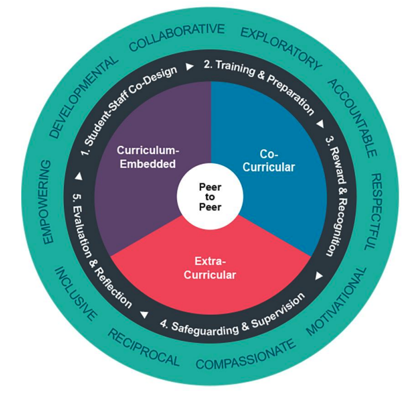
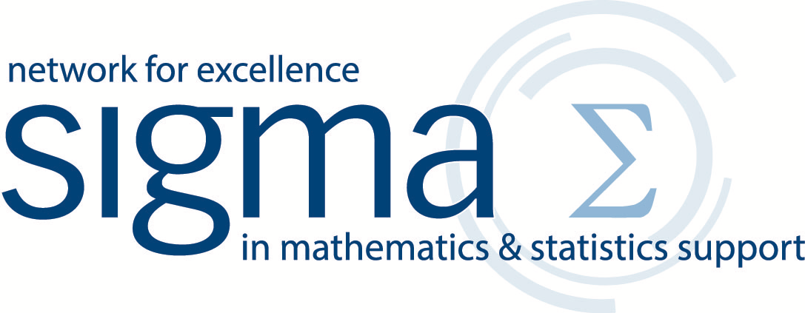

External Resources
Explore selected external resources on peer learning and student support.

Advance HE: Student-led Peer Learning and Support (2025)The 2025 Advance HE framework offers guidance on developing effective student-led peer learning and support for all subject areas.

SIGMA Network: Mathematics and Statistics SupportThe SIGMA Network promotes the importance of cross-university mathematics and statistics support, and provides developmental activities and expert mentoring for those who work in this area.